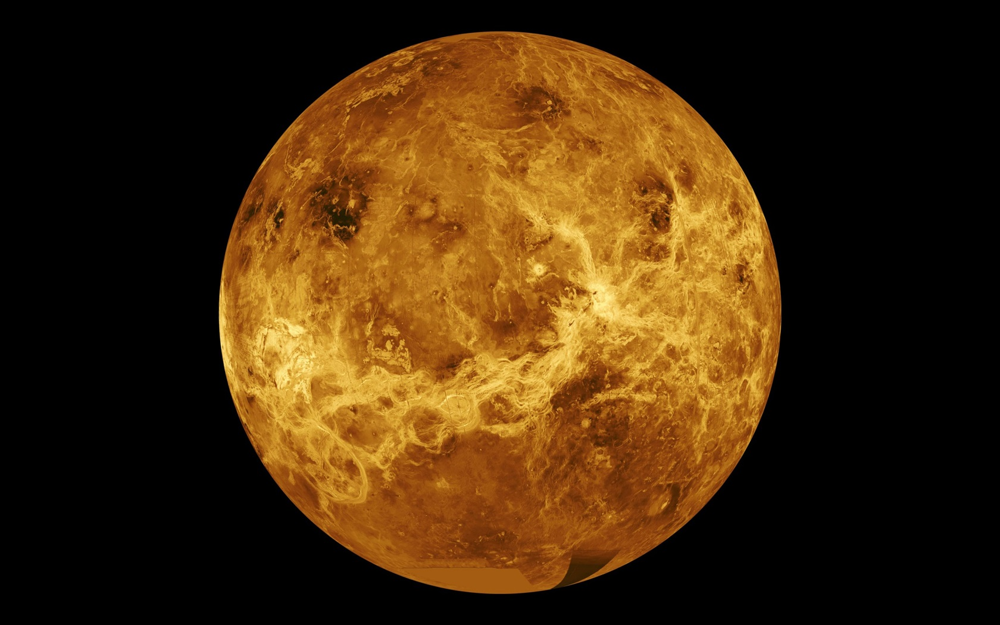
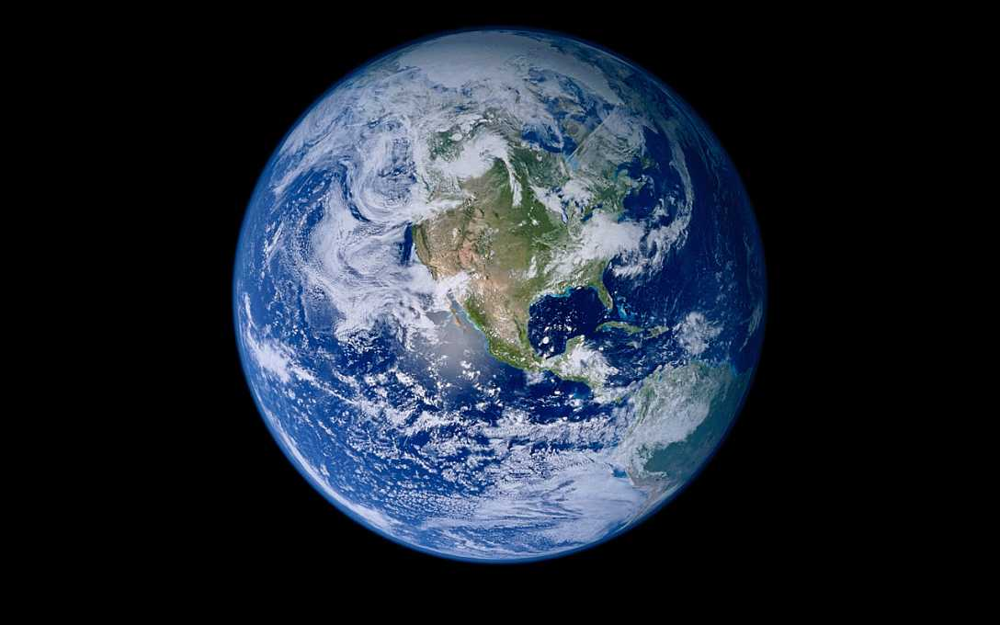
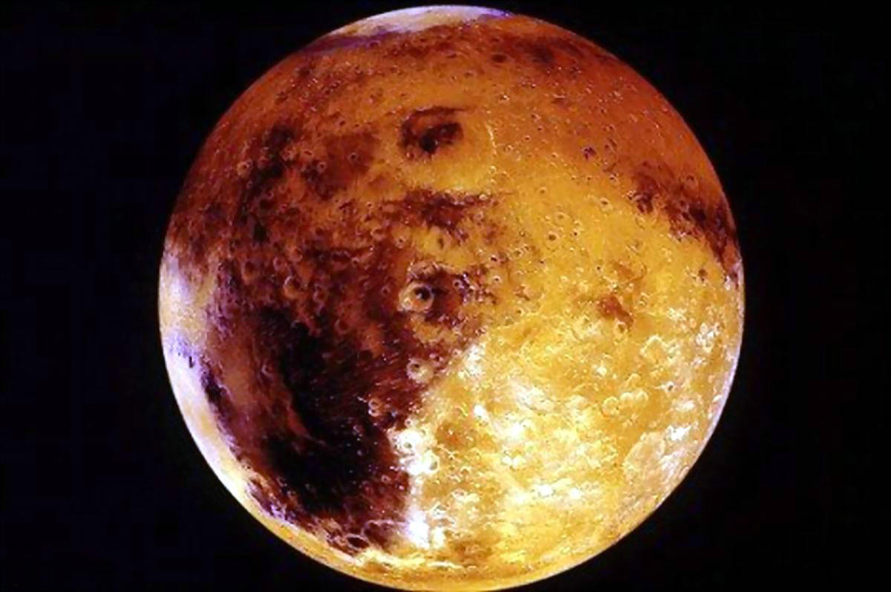
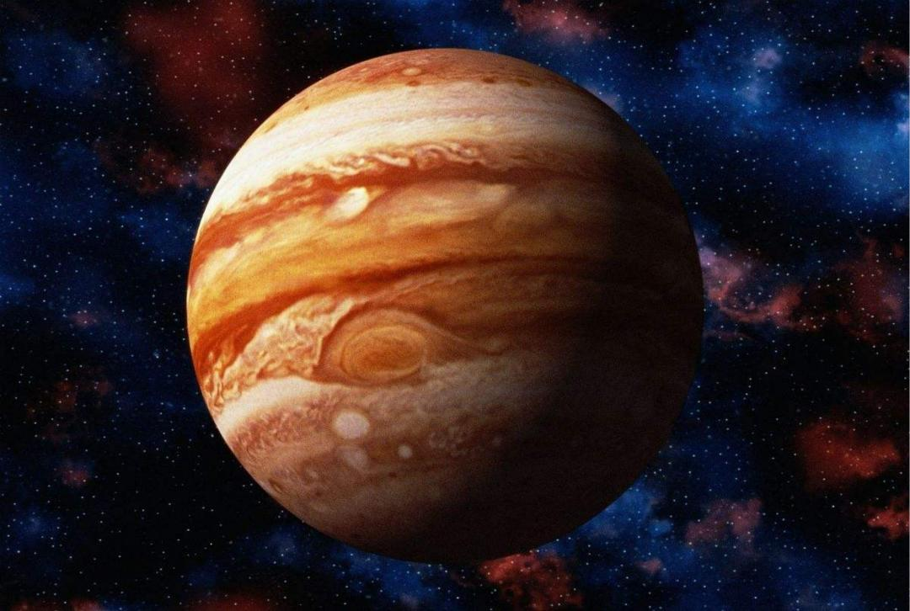
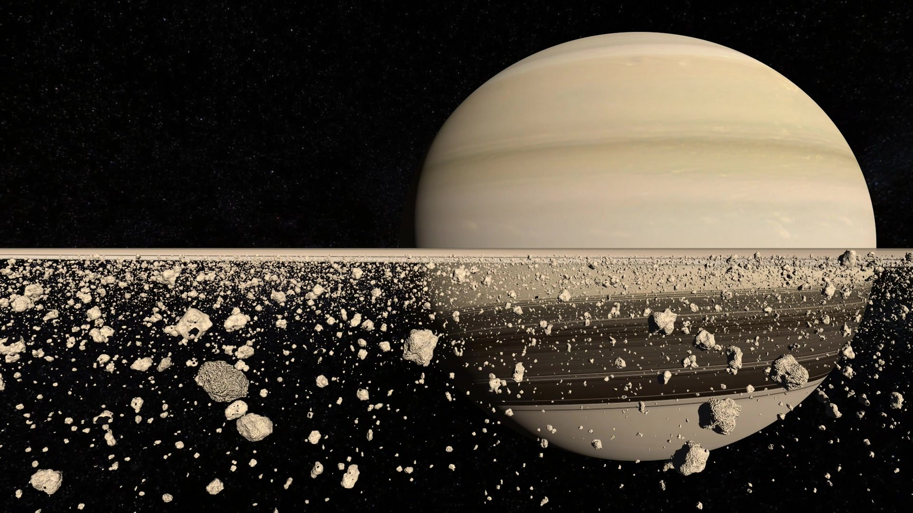
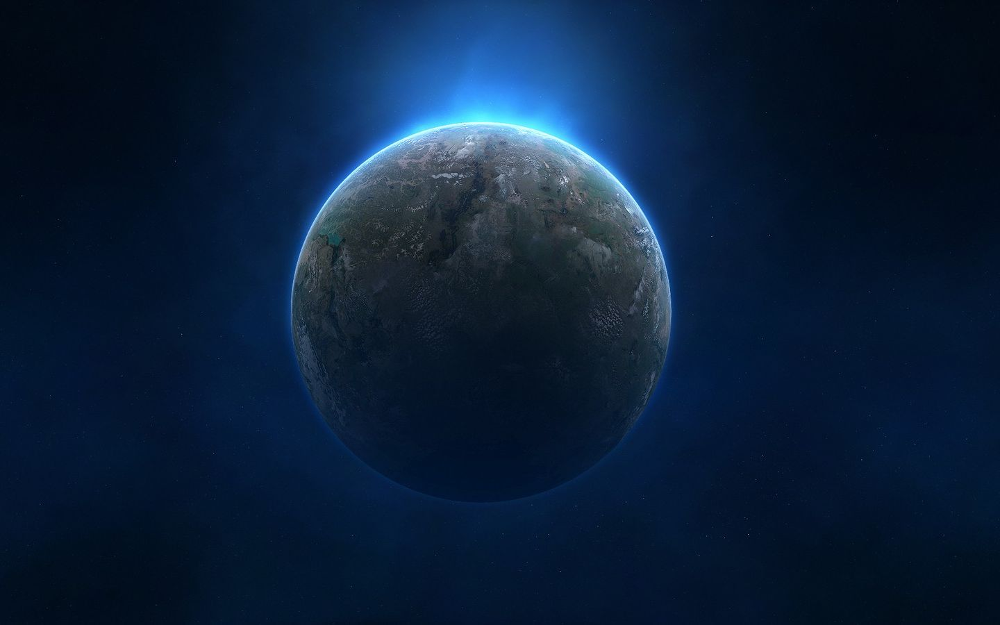

Mercury
Terrestrial Planets, DIA.：4878 km
 Mercury is the planet closest to the Sun. Not that close though. It is 36 million miles, or 58 million kilometres away from the Sun. What to learn more? Click the name!
Mercury is the planet closest to the Sun. Not that close though. It is 36 million miles, or 58 million kilometres away from the Sun. What to learn more? Click the name!
Venus
One of the eight planets, DIA.：12103.6 km
 Venus is the brightest planet in the Solar System and it even can be seen during daylight if you look up to the sky.
Earth
planet, DIA.：12756 km
 The Earth is a very different planet in the Solar System compared to other planets.
Mars
Terrestrial planets, DIA.：6794 km
 The Mars, the Red Planet, the fourth planet from the sun, is a home to a red tint instead of blue and green.
Jupiter
Terrestrial planets , DIA.：142984 km
 Jupiter is the fifth planet from the Sun and the largest in the Solar System. It is a giant planet with a mass one-thousandth that of the Sun.
Saturn
Gaseous giant planet , DIA.：120540 km
 Saturn is the sixth planet from the Sun of Earth. Saturn is named after the Roman god of agriculture; its astronomical symbol (♄) represents the god's sickle. It has a "ring" by side.
Neptune
planets , DIA.：49,532 km
 Same as Uranus, Neptune cannot been seen without a telescope either.